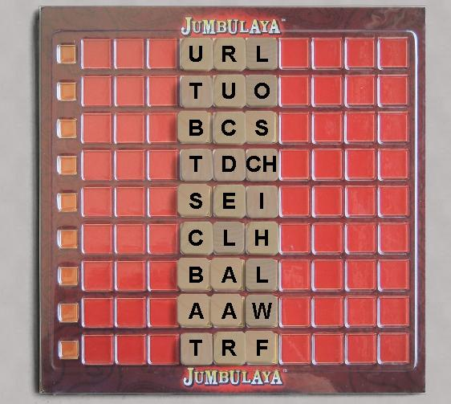
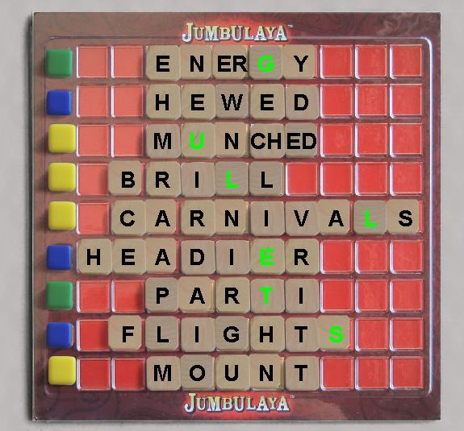

SET UP
- Draw random tiles to fill the three middle columns of the board..
- Give each player a tile rack and 5 random tiles and a color marker.
- Select a random first Player.
Turns:
Each turn, you can manipulate the tiles in ONE row to form a word. The new word must:
- be a valid scrabble word.
- use at most 2 letters from your rack.
- use at least as many tiles as the previous word on that line.
- be a new word, not previously played on that line.
In
other words, you may rearrange the letters any way you want, and take
unused letters into your rack, subject to the restrictions above.
The number of letters in the word does not matter, only the number of tiles used to form the word. For example it's forbidden to replace B-A-T-CH with B-A-T-C-H. You may play a word on a line you already own.
Mark the new word as owned by with your color marker.
Draw tiles to have 5 tiles in your rack.
Alternate turns:
You may pass, or you may discard tiles, mix the discarded tiles into the draw pile, and draw replacements.
Jumbulaya plays.
If all lines are claimed, and at least one line has 7 tiles, anyone, at any time no word is being played,
can form a Jumbula, which ends the game. A Jumbulaya is a 7 8 or
9 tile word, top to bottom, using one tile per line. 7 or 8 tile
jumbulayas will skip one or two lines. Playing a Jumbulaya ends the game immediately. The penalty for failing to play a Jumbulaya once you start one, is to lose your next turn.
Scoring:
The score for a each line you own is as follows:
- 3-6 tiles, 1 point per tile plus 1 point per double letter
- 7 tiles 10 points plus 1 point per double letter
- 8 tiles 12 points plus 1 point per double letter
- 9 tiles 15 points plus 1 point per double letter
- 10 tiles 20 points plus 1 point per double letter
Score for forming a Jumbalaya depends on the number of tiles used
- 7 tiles 10 points
- 8 tiles 12 points
- 9 tiles 15 points
End of Game
The game ends one of 4 ways.
- some player plays a Jumbulaya
- some player plays a 10 tile word
- some player owns all 9 lines.
- no player plays a word for 2 rounds.
When the game ends, the player with the most points wins.
Letter Distribution
A 6 B 3 C 4 D 4 E 9
F 3 G 3 H 3 I 6 J 1 K 2 L 5 M 4 N 5 O 6 P 3 Q 0
R 6 S 5 T 5 U 3 V 1 W 2 X 1 Y 2 Z 1
Double Letters
QU 1 CH 1 ED 1 ER 1 LY 1 ST 1 TH 1
|

Game Setup

Game ended by Jumbulaya |